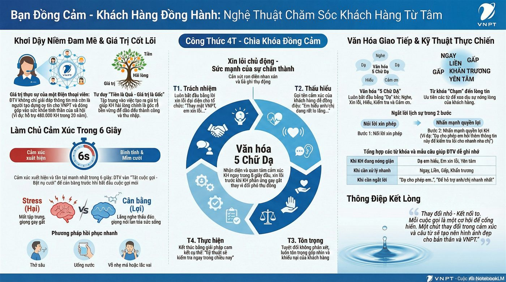
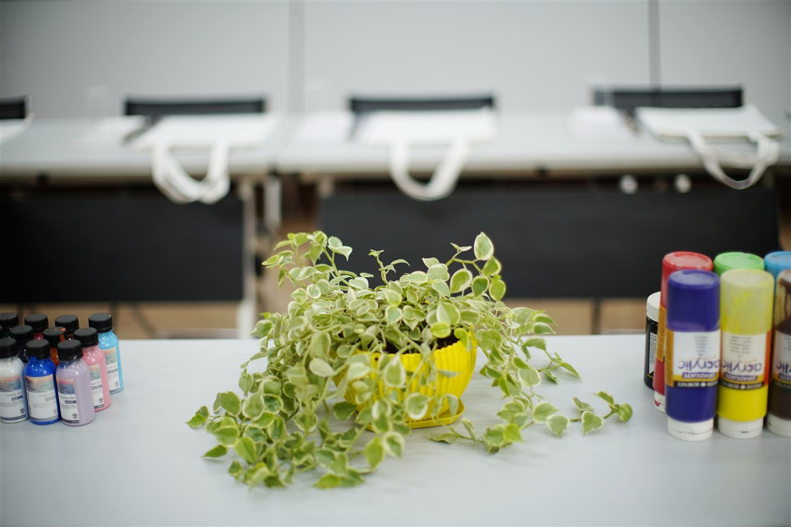
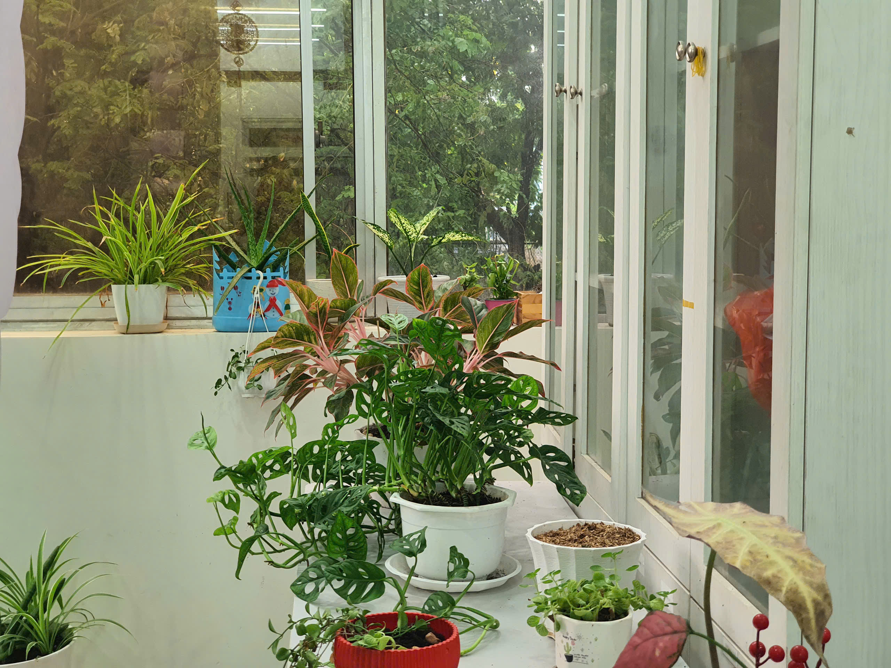
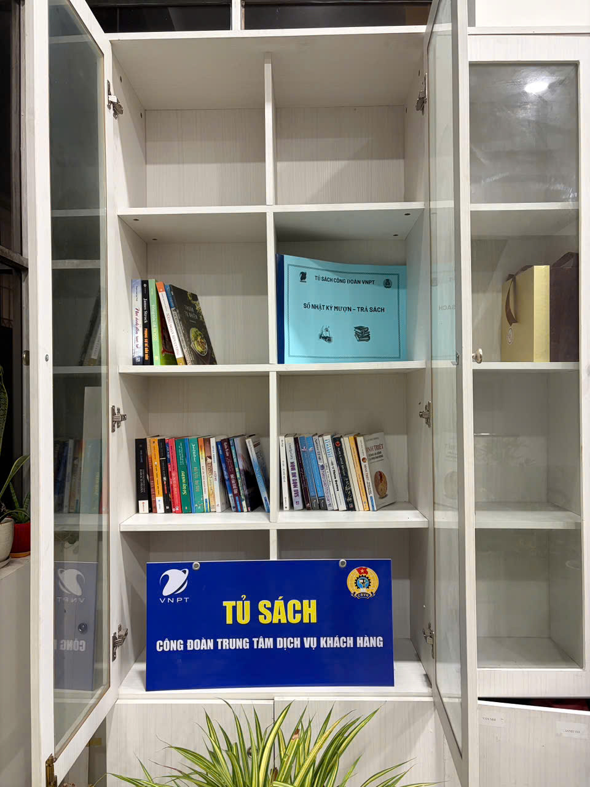
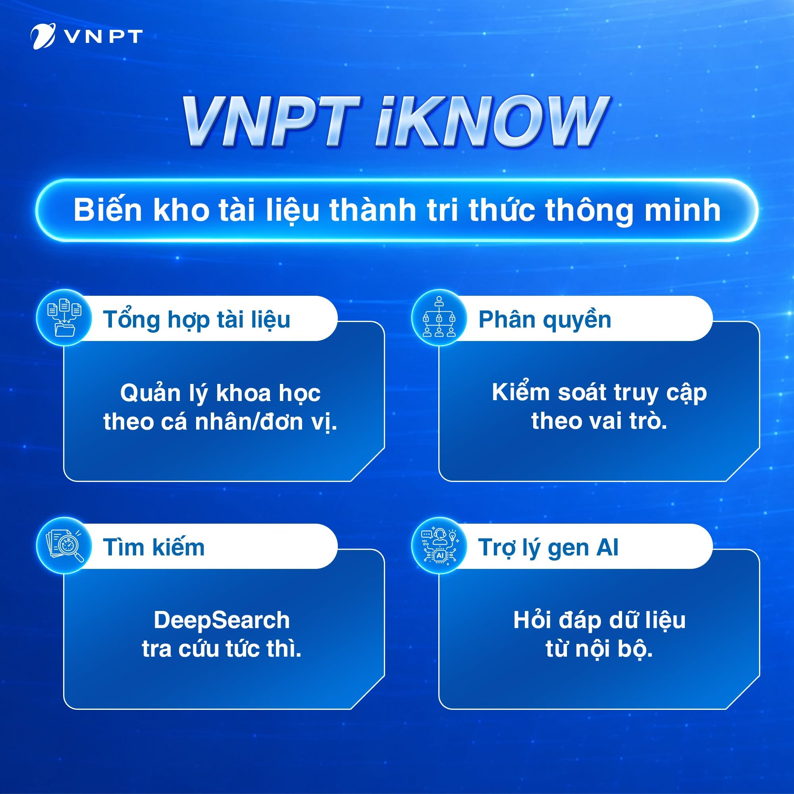

Kỹ năng kết nối KH trong 20 giây đầu tiên
20 giây đầu quyết định ấn tượng đầu tiên. Chào hỏi đúng chuẩn, tạo thiện cảm, lắng nghe, xác nhận nhu cầu và thể hiện sự tận tâm.
Quy chiếu: CM2, CM7 · QT11, QT24
Công đoàn Trung tâm Dịch vụ Khách hàng – Công đoàn Miền Nam
Bứt phá bằng trí tuệ, chạm đến bằng trái tim. Hành trình đưa AI vào công việc và lan tỏa văn hóa VNPT HEART tại cơ sở.
Clip đầy đủ được trình chiếu trực tiếp tại buổi thuyết trình. (Bản online không nhúng được clip gốc do dung lượng lớn.)
▶ Xem clip đầy đủ trên Google Drive4 kỹ năng thực chiến tại Trung tâm Dịch vụ Khách hàng — nơi văn hóa HEART được sống mỗi ngày qua từng cuộc gọi, từng điểm chạm khách hàng.
20 giây đầu quyết định ấn tượng đầu tiên. Chào hỏi đúng chuẩn, tạo thiện cảm, lắng nghe, xác nhận nhu cầu và thể hiện sự tận tâm.
Quy chiếu: CM2, CM7 · QT11, QT24
Khi khách hàng từ chối, cần tìm nguyên nhân thật sự, đồng cảm và đề xuất giải pháp tối ưu — thay vì tranh luận hay tạo áp lực bán hàng.
Quy chiếu: CM1, CM3 · QT18, QT21

"Dạ thưa – Xin lỗi – Đồng cảm – Trách nhiệm đến cùng": giữ bình tĩnh, xin lỗi đúng lúc, đồng cảm với khách hàng và xử lý sự cố với tinh thần cầu thị.
Quy chiếu: CM1, CM6 · QT24, QT25
Đồng hành – Đồng sức – Đồng lòng: Sales và Kỹ thuật cùng chịu trách nhiệm với trải nghiệm khách hàng, không "đá bóng" trách nhiệm cho nhau.
Quy chiếu: CM4, CM5 · QT09, QT23
Sáng tạo không chỉ trong công nghệ mà còn trong cách gắn kết con người — từ nét vẽ, trang sách đến mảng xanh nơi công sở.

Từng nét vẽ, từng mảnh gỗ ghép lại giúp lắng nghe chủ động, thấu hiểu sự khác biệt và tôn trọng đồng nghiệp chân thành hơn.
Quy chiếu: CM8 · QT32

Hoạt động ESG nội bộ: xây dựng không gian làm việc xanh – sạch – bền vững, tái tạo năng lượng tích cực cho đội ngũ.
Quy chiếu: QT46

"Cùng làm – Cùng học – Cùng tiến": chia sẻ tri thức, xây dựng tinh thần tự học liên tục và kết nối cả đội ngũ.
Quy chiếu: QT35 · Lời hứa 3
Không dừng ở một phòng ban — AI được lan tỏa thành nền tảng số dùng chung cho toàn đơn vị.

Chuyển giao trực tiếp ứng dụng AI (VNPT iKnow) xuống từng đơn vị, tối ưu hóa quy trình, tự động hóa thao tác thủ công — trân trọng bước nhỏ, tạo giá trị lớn.
Quy chiếu: CM8 · QT44 · Nguyên tắc 6 – Ưu tiên kỹ thuật số & AI